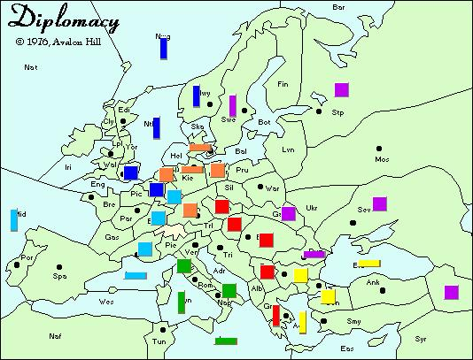
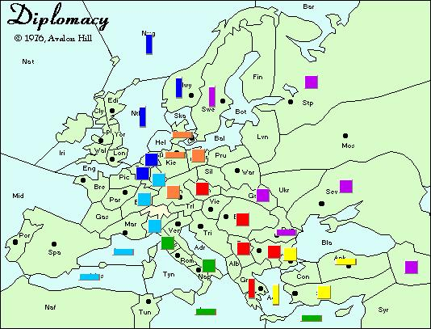
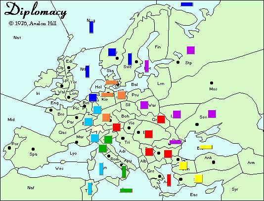
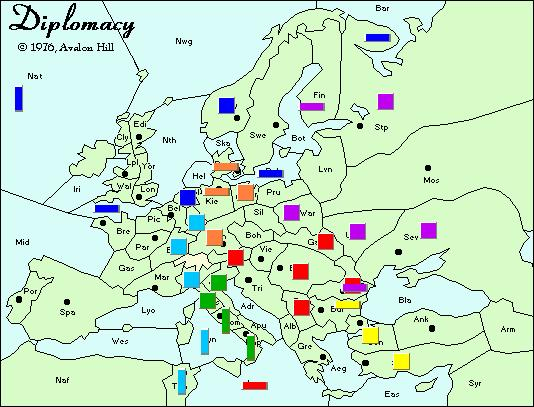
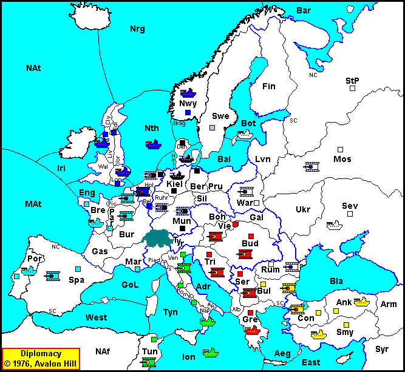
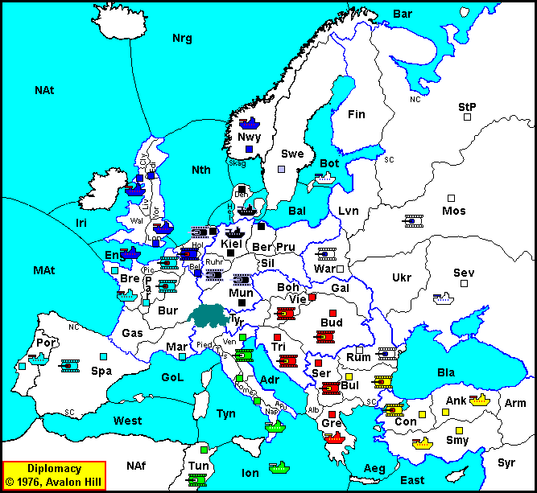
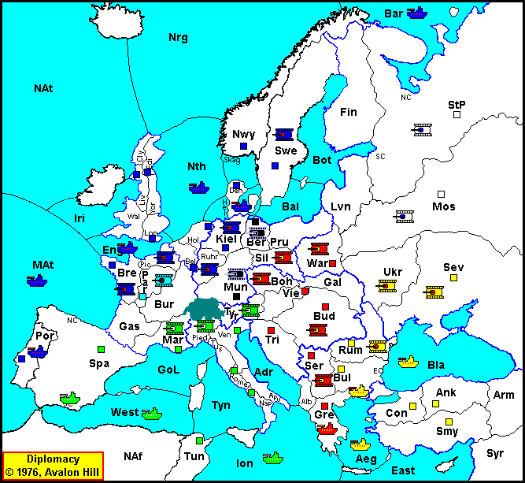
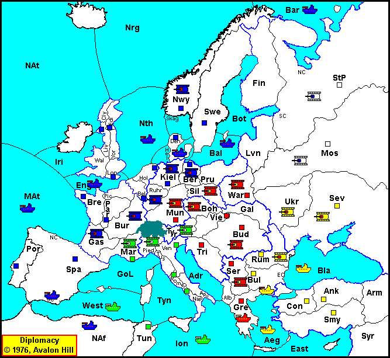
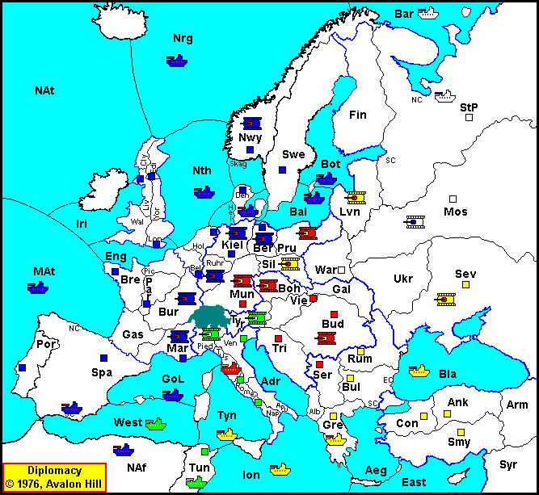
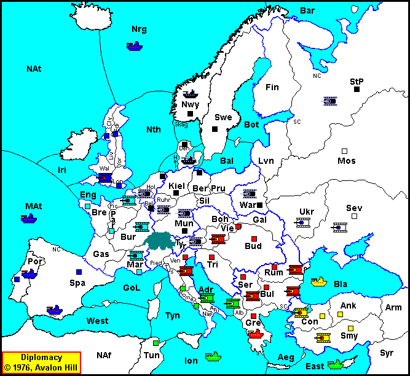

It's been two years since WDC VIII, where I was, as Ben Stein says "Smart enough, tough enough, and lucky enough" to come home with the win. Since that time, I've played in a bunch of tournaments, e-mail and F2F, and I've been forced to come to an unpleasant conclusion: I am not a little guy anymore.
While this has its definite downside (being attacked in 1902 by four other powers is a bit excessive, I think. Three? Sure, I understand that. But four? ), hey, It's not all bad. The buzz at the table as the newer players are informed of the title holder in their midst. The glum, "I knew he'd do that" look as I cruise to another solo -- There are rewards. (Hah! Like I get solos anymore!!!) Benefits and drawbacks aside, the approach which took me to the top hasn't been sufficient to keep me there. I can't sneak up on 'em like I used to. So my challenge has been this: how to compete with the sharks, and all the up'n'comin' gunslingers, when I can no longer slip in under their radar? As it happens, I have learned a thing or two about swimming with sharks. And here, in time for WDC XI, are a few thoughts that might help you win a few games!
This is something that seems obvious, right? You have to think long-term in order to win. But what does "thinking long-term" mean, really? In my book, it means never losing sight of your overall objective -- eighteen dots.
Gasp! The goal is eighteen dots? Yuppers. Every time you sit down at the table to play, you and your fellow players are trying to get more than half of those lovely little black dots. Now, the purpose of this isn't to tell you which eighteen dots to get -- look elsewhere on this fine site for that info. I do want to impress that you must consider your long-term goal when making decisions early on.
An example: France and England are coöperating in the destruction of Germany. In the process of the attack, England takes Belgium, with the "understanding" that upon capture of German home SC's, France would take possession. Not, I think, an uncommon arrangement.
With this accomplished in 1901, the allies move on. England builds F Edi, A London. France builds A Paris, F Marseilles. In Spring 1902 France moves into Burgundy, and Ruhr, England positions units. Here's the Spring 1902 Map:
|  |
|---|
Okay, you're England -- you're thinking long--term. France is planning on swinging the fleet into the Med., cutting Kiel's support, and pushing A Marseilles into Piedmont.
You write the orders! What do you do at this point?
Okay, if you came up with:
Then you made the right call!
Sure, there are other options, but this puts both your armies on the continent, where you have a say in what happens later . . .
So, here is the map after the fall turn:
|  |
|---|
So far, so good! Things are looking smashing for the F/E alliance. So, what do you build? And why? And what is your next goal? Your next step on your quest for the elusive eighteen? Let's look at your next logical areas of acquisition:
So, which choice do you make? Most folks will go for a combination of 1 and 2, trusting their superior position to keep them safe from a French stab. And this is not a bad strategy -- lots of folks will get a nice three- or four-way draw out of it. Owning St. Pete, Scandinavia, Northern Germany and Holland puts you at 10 centers, a quite respectable England in any tournament. However, this position will not get you to eighteen, no way, no how. While you are busy doing all of this, France is busy gobbling up Italian dots, possibly getting as far as Northern Austria. Barring the total collapse of Russia, the other eight dots you need come from France. Most likely result? Three-way draw with Turkey.
And this is where the long term thinking comes in. France is understandably worried about your intentions at this point -- so be as friendly as can be -- go for the "friendly, alliance-building" choice. Build F Edi, and move in the Spring thusly:
|  |
|---|
Now, in this example, we were lucky enough to get German support for the move to Sweden -- that wont happen every time, but it shouldn't be too hard a sell -- Germany is looking for a friend, right? More on keeping your targets as friends in a moment. Here we've made a strong bid for the Scandinavian centers, France is mollified, and dare we say . . . unsuspecting? So what shall we do now? Fall is coming -- Russia is understandably upset. What do you do now? Take St. Pete with the army, cutting the Gulf of Bothnia's support? Support yourself into Denmark, cutting Kiel's support from Holland? Not bad choices, either of them -- look at the whole board, though. Do you see anything else developing? Anything you might want to take advantage of?
Fall 1903 results?
|  |
|---|
Okay, now what have we done here?
This was the turning point -- stabbing France before he could profit from his Italian gains. Leaving Russia the ability to fight Austria. Putting yourself in position to continue to take German dots. In the end, given enough time, England could have:
Home (3) Scandinavia (6) Lowlands/St. Pete (9) Germany (12) France (15) Iberia (17) -- and any one of the following -- Tunis, Venice, Moscow, Vienna. Eighteen!
And you had to make the crucial decision in 1903. You can't start to think long-term early enough. This is just one example, of course, and if could easily go wrong. Taking the 10 center 3way draw is SAFER, of course. It's a GOOD choice if you are looking to do well in the tournament. But if you aren't a little guy . . . and you have to get your points the hard way, then you have to look for those eighteen dots in every game. They won't always be there, but if you never look, you'll very rarely find them. And waiting until the middle of the game before you start looking, I'm afraid, is too late.
Okay, in our first section, we looked for the opportunity to get to eighteen. Here, in our second section, we will examine ways to encourage one's ally to take a position which, while appearing to be advantageous to them, in fact leaves them open for the blade.
Some of you may remember some advice I gave a while back -- "Alliance play wins Tournaments". I hold that this is true. The problem therein is that one runs the risk of one's ally doing better than oneself! So, we need to see how we can shape our alliance so that our ally doesn't do quite as well as we do. To help us with this, lets take a page from another noted author and Diplomat -- Stephen Agar, in his "Prising the French Snail From his Shell."
So, we looked at England last time, so this time, lets take the German point of view. Lets come up with a set of choices that succeed in our objective of removing France from the game, and leaving Germany in a markedly better position to continue to advance than England. Take a quick moment to look over the article, and then we'll sum up our options:
1. A Date for Dinner in Brussels?
And in the fall:
2. The D-Day Approach
And in the fall:
Okay, now these options leave out choices where Germany opens to Burgundy, so we'll leave that alone. I note that Stephen has Germany bouncing Russia in Sweden without any comment. I'll leave it alone as well, except to say that I would give a long hard look at allowing Russia to have Sweden in 1901 -- with another northern fleet build, Russia can be quite a thorn in England's side. That, while tangential to our focus, is really more under the heading of #3. So, on to our opening choices -- #1 or #2? Which one do you sell to England?
Lets look at two boards, and see which Spring 1902 position we like more.
|  |
|---|
|  |
|---|
Well, a quick look shows small difference -- the English fleet is in the North Sea, or the English Channel. Ah, but what a difference that makes! The English Channel is a better position for so many reasons.
My thought here is that as Germany, you want the English fleets away from England ASAP. Get England into the Westmed soon enough, before he has enough force to support himself, and he will be overextended. Get him into Portugal, and make him defend it! With England's fleets strung out around Iberia, and France defending against those fleets, you should be able to make greater gains. Make sure you turn them into a better position. (i.e. you can take Sweden with a fleet, placing your second fleet in Denmark, naturally!)
So, right from the outset, having decided to attack France, you want to get England to take the aggressive stance, the one that assumes the risks. With England in the Channel, he is practically committed to war with France, and thus he should build F Liverpool -- if he isn't in the Channel, he might well team up with France and come after you in '02! If England and France bounce in the channel, you haven't committed any acts of war, have you? And if Russia (through a move of Moscow -> St. Pete) looks to bounce England out of Norway, well, perhaps you should be working with France instead! By encouraging a posture of attack which England cannot sustain without you, you allow yourself the option of yanking the carpet out from under him (and this is the important part), SHOULD AN APPROPRIATE MOMENT ARRIVE. Don't feel obligated to stab simply because you can!
Don't take this as being "a bad ally". The cause of conquering France is being advanced -- England is profiting thereby. But in choosing tactics, if you can gently nudge your ally into a position that doesn't work out for him, well, so much the better for you! And if it does work out for him, that's fine as well. Sometimes a fast striking attack is the way to go, and you'll want to remain good allies with your partner long into the game -- perhaps through to the end. It depends on what happens on the other side of the table. As we saw in point one, its never too soon to think about your eighteen dots. (As Germany, you don't have to get England's centers to get your solo, but it sure helps!) So, let's look to point #3, and see what we can do to influence the other side of the board!
In F2F play, there often isn't enough time to get to every other player every turn. In fact, this is one of the biggest weaknesses I see in Email players who come to F2F games, is the lack of ability to manage their time. Nonetheless, you MUST pay attention to the whole board, and use what influence you can to shape it. In F2F play, because so few people take the time to work the board, it's a terrific way to get other people into, or out of trouble.
As a "dis-interested party", you can have a tremendous effect on who gets what from who, and how. As Turkey, you can sagely give advice to England on how to attack France, and then give France advice on how best to defend himself! It's a little tougher as a central power, particularly as Italy -- everyone figures you've got something at stake. Nonetheless, if you can build your rep as a friend of the cause, you can do for the other side of the board what you did for your ally in Example 2!
I think most people (well, most successful people) on the e-mail circuit do this. Its harder to make work there, because you aren't taking valuable time to talk to them -- its expected that you talk to everyone every turn. In time-limited games, it really means something.
Let's take two examples.
#1. In a recent tournament I was playing Germany. Over the course of the crucial 1903/4 seasons, I was able to give advice, both tactical and diplomatic, to
#2: This was in an e-mail game, so it was truly egregious! (in progress as this goes to print, but pretty much all done but the shouting), I was playing Russia, and a Western Triple shows up on the other side of the board. Italy and Austria are inexorably at odds, and Turkey fails to show up on her promise of an R/T alliance. It looks good for the W3 -- England rolls into St. Pete with an Army, and France is about to make some progress in the Med. into Italy. My letters to the Western Three go almost completely unanswered. England goes so far as to say "Sorry, I am committed to this course. Feel free to write, but I may not bother to respond." The first letter I get from the West happens the season France gets stabbed by Germany -- and then England piles on.
On my side of the board, Turkey has finally collapsed, and Austria has helped me out -- I am on six centers, but England has armies in St. Pete and Livonia, and Germany's build as we go into 1904? Army Berlin. Austria's got me by the short and curlies if he wants me, but I know E/G aren't going to cut me any slack, so I convoy an army back up north to stop the loss of Moscow/Warsaw, and hope that Austria doesn't stab.
Naturally, Austria stabs.  But it's a really
good stab. He takes Rumania
and Bulgaria from me, will take Naples from Italy in the Fall, and possibly the
last Turkish Center as well. Germany has moved to Prussia, instead of
Silesia -- so he has no hope or reconciling with me and turning on Austria.
But it's a really
good stab. He takes Rumania
and Bulgaria from me, will take Naples from Italy in the Fall, and possibly the
last Turkish Center as well. Germany has moved to Prussia, instead of
Silesia -- so he has no hope or reconciling with me and turning on Austria.
At last, the mail pours in from Germany and England. "Let us help you against the perfidious Austrian!" they write. Austria writes as well -- it's a short note, but it says "Well, the game seems to lead to stabbing -- I hope you see that it was nothing personal, please keep in touch!" Now, who would you continue to work with?
It's a no-brainer for me. I offer E/G the chance to back off, and let me fight Austria. I offer Austria the chance to back off (A little -- just enough to leave me enough centers to hold of E/G) and let me hold his northern front. Who do you think took me up on the offer?
And Germany writes back, and says, "Sorry, but I really don't want to fight Austria!" (!!!)
If E/G had been a little better at keeping me friendly, if England had realized just how hard it is to push past St. Pete with armies from England, if Austria hadn't been such a good ally -- well, you get the idea. Austria was working the board, and he's going to deserve what he gets -- he has 14 fourteen centers in the bag, and E/G are going to be hard pressed to stop the solo!
This is possibly the hardest thing to do in tournament Diplomacy: Balance the need to finish killing someone until they're dead with the need to stop killing someone because they turn out to be more useful alive. My general rule is finish what you start, but let's take a look at a couple of examples, and see what you think -- let 'em live, or finish 'em off?
In the following threee examples, you are Turkey. The question? Russia. Remember, this is a F2F game -- you have very little time to contemplate, and less to co-ordinate. Don't take too long thinking!
|  |
|---|
Ask yourself these questions:
Is England a threat to solo? [Show Answer]
Does taking Moscow improve your position relative to Austria, or worsen it? [Show Answer]
Can you be whittled out of the draw by England, Austria and Italy? [Show Answer]
Okay, now lets take a look at a slightly different board . . .
|  |
|---|
And ask ourselves the same question -- do we improve or harm our position by taking out Russia?
So, should I take Moscow? It sounds like the answer is no.
This is a tough one, because really, the fight is not in the north, it's in the Mediterranean. England can take St. Pete, he just has to devote the resources to it. That gives him fifteen. Marseilles is the same, and that's sixteen. Munich is a question -- but its not impregnable. Given enough time, or a poor defense, it can be taken. And then there's Tunis. Without prompt action on the part of A/T, Tunis will fall, and that's a real problem.
My call? It can't hurt to delay taking Moscow until Tunis's defense is secured. Have Italy move to Tunis, but support the fleet in Greece to move to the Ionian, so that if the Italian is bounced, he retreats to the Tyrrhenian Sea and Austria holds the Ionian. Convince Austria to let you push your other fleet in Bulgaria though, until you and your allies have fleets from Tuscany to Tunis. Russia lives only as long as he orders St. Pete to hold. Once St. Pete falls, or the defense of Tunis is secure, then take Moscow.
This is tournament play we are talking about here. Take the tournament scoring system and rules into account here. If keeping Russia around won't hurt your points, then by all means let him live in Moscow. But I can't tell you how many tournaments are decided by dot count -- and how many 2nd and 3rd places are decided by two or three dots....
Last Turkish example:
|  |
|---|
Now, this is a typical example of what happens when there's a scramble for the stalemate lines, if such a thing can be called typical. England has made a major breakthrough, and the remaining powers have set aside their differences to try to stop the solo. The question: Can Russia be eliminated without risking the solo?
Oh, and before we go to the answer, we eliminate Russia to reduce the number of powers in the draw, so that we get more points in the tournament. Since all tournaments of quality will soon realize the inherent superiority of DIAS (Draws Include All Survivors), the question, "Is a four-way draw worth enough more than a five-way draw to justify taking Russia down?" will matter. You can bet that England will be telling you, "Hey, take down Russia, so I get seventeen; big deal! I can't get the solo!" You'd better be able to supply a good answer!
Can Russia be eliminated without risk of an English solo? [Show Answer]
Okay, now here's a different sort of situation. You are Austria:
|  |
|---|
The situation: You and Turkey were working against Russia -- But last year you and you ally the Italian stabbed the Turk for Bulgaria, as Italy moved his fleets into position. This year you stabbed Italy for two dots -- Venice and Greece. Germany assisted you into Venice. In the spring, Germany took St. Pete from England, and in the fall, Norway. Unfortunately for Germany, England captured Spain and Portugal this year, so he remains at five. France disbanded the Spanish fleet, so he is even. You have two builds, Germany has two builds, and Italy removes one. The question is what do you build?
Let's examine our situation in the light of the above choices, shall we?
So what should you do next?
Okay, folks, there you have it. It's a bit heavy on the maps, but that's my thinking today on how to play to win tournament Diplomacy. I hope that some of this thinking is going to help whoever wins World DipCon XI. Please send me any thoughts you have; I expect there is room for disagreement on several points. That's cool. I'll see you across a table soon, and get my revenge for anything nasty you have to say there!

|
Chris Martin (tremewanc@worldnet.att.net) |
If you wish to e-mail feedback on this article to the author, and clicking on the envelope above does not work for you, feel free to use the "Dear DP..." mail interface.